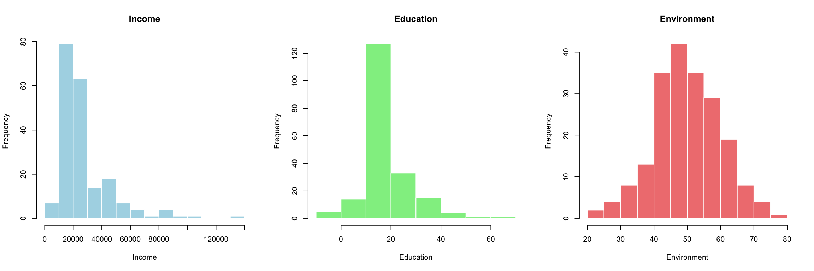

set.seed(1234)
n <- 200
rho <- -0.10Synthetic data generation for income, education, and environment
Goal
This document generates 200 observations for three variables:
- income
- positively skewed
- includes a few outliers
- meant to resemble an income-like distribution
- positively skewed
- education
- has a similar skewed shape to income
- measured on a different scale
- has a similar skewed shape to income
- environment
- approximately normal
- constructed so that its correlation with income is exactly -0.10 in the sample
- approximately normal
The code also verifies the final distributions and correlations.
Step 1: Create a skewed variable for income
Income is generated from a log-normal distribution, which is commonly used for right-skewed variables. To create a few outliers, two randomly chosen observations are multiplied by larger factors.
# Base skewed income distribution
income <- rlnorm(n, meanlog = 10, sdlog = 0.45)
# Add a few outliers
outlier_id <- sample(1:n, 15)
income[outlier_id] <- income[outlier_id] * c(2.8, 3.5)Warning in income[outlier_id] * c(2.8, 3.5): longer object length is not a
multiple of shorter object lengthsummary(income) Min. 1st Qu. Median Mean 3rd Qu. Max.
6093 16409 21431 27542 30683 130465 Step 2: Create education with a similar shape but a different scale
To make education look similar to income, start from the same latent skewed pattern, then rescale it and add a little noise. This preserves the broad right-skewed shape while placing the variable on a different magnitude.
# Create a similar skewed variable on a different scale
education <- 8 + 0.00035 * income + rnorm(n, mean = 0, sd = 1.2)
# Keep the scale realistic and positive
education <- pmax(education, 1)
# change few observations to reduce correlation with income
randompick <- sample(1:n, 50)
education[randompick] <- education[randompick] + c(sample(-20:20, 50, replace = TRUE))
summary(education) Min. 1st Qu. Median Mean 3rd Qu. Max.
-5.685 13.319 15.893 17.899 20.607 62.331 Step 3: Create environment as a normal variable with correlation -0.10 with income
To achieve a sample correlation of exactly -0.10, the following method is used:
standardize income generate an independent random normal vector remove any sample correlation between that random vector and income combine them using the target correlation formula
This ensures the resulting standardized variable has the desired sample correlation with income.
# Standardize income
x <- as.numeric(scale(income))
# Independent normal noise
z <- rnorm(n)
# Remove sample correlation between z and x
z_orth <- resid(lm(z ~ x))
# Standardize orthogonal component
z_orth <- as.numeric(scale(z_orth))
# Construct standardized environment with exact sample correlation rho with x
environment_std <- rho * x + sqrt(1 - rho^2) * z_orth
# Put on a convenient scale
environment <- 50 + 10 * environment_std
summary(environment) Min. 1st Qu. Median Mean 3rd Qu. Max.
21.32 43.75 49.51 50.00 56.98 75.71 Step 4: Combine into a data frame
dat <- data.frame(
income = round(income, 2),
education = round(education, 2),
environment = round(environment, 2)
)Step 5: Check the correlation matrix
The key requirement is that income and environment have a correlation of -0.10.
cor(dat) income education environment
income 1.0000000 0.7398230 -0.1000262
education 0.7398230 1.0000000 -0.1146954
environment -0.1000262 -0.1146954 1.0000000Step 6: Check distributions visually
These plots help confirm that:
income is right-skewed with a few outliers education has a similar skewed shape on a different scale environment looks approximately normal

Step 7: Export the data
Finally, we can save the generated dataset to a CSV file for future use.
write.csv(dat, "synthetic_data.csv", row.names = FALSE)